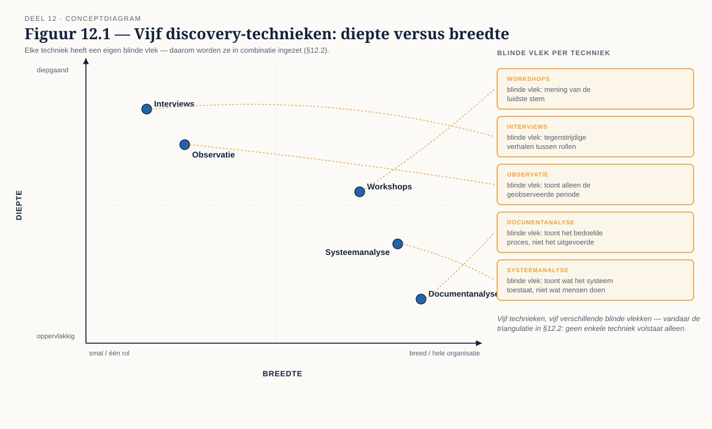
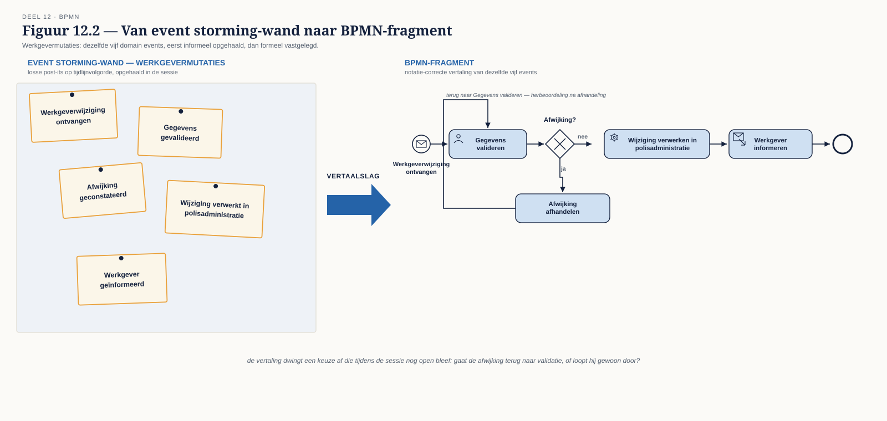
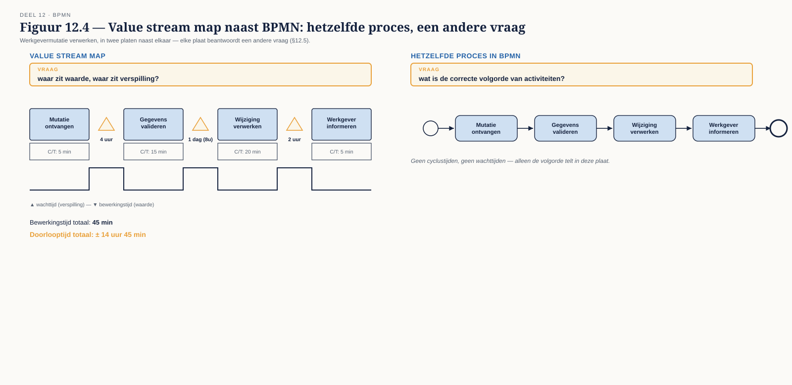

Deel 12 — Procesanalyse en -ontwerp
Slidedeck · Ductus-cursus BPMN, CMMN & DMN · niveau 2 · deel 12 van 30 · 24 slides
Slide 1 — Titelslide
Procesanalyse en -ontwerp — Deel 12
Beeldmerk, cursustitel
Spreeknotitie: Het meest "consultancy-vaardigheid"-gerichte deel tot nu toe.
Slide 2 — Leerdoelen
Na vandaag kun je…
Vijf leerdoelen uit de reader
Spreeknotitie: Kort.
Slide 3 — Elke keuze heeft een prijs
De rode draad van vandaag
Eén tekstslide
Spreeknotitie: Herhaal dit bij elke techniek en elk principe — dat is de kern van het deel.
Slide 4 — Vijf technieken
Workshops · interviews · observatie · documentanalyse · systeemanalyse

Figuur 12.1
Spreeknotitie: Elke techniek heeft een blinde vlek.
Slide 5 — De werkinstructie die niet klopt
WI-114 zoals opgeschreven, versus WI-114 zoals uitgevoerd
Twee kolommen naast elkaar
Spreeknotitie: Dit is waarom je meerdere technieken combineert.
Slide 6 — Opdracht 1
Kies de techniek — acht situaties
Werkboekverwijzing, timer 20 minuten
Spreeknotitie: Individueel, plenair nabespreken. Situatie 6 (uiteenlopende belangen) levert de meeste discussie op.
Slide 7 — Event storming
Domain events, geen volgorde vooraf

Figuur 12.2, leeg
Spreeknotitie: De voltooide vorm — net als BPMN-events.
Slide 8 — Opzet van een sessie
Chaotic exploration, dan ordenen
Tijdlijn van een typische sessie
Spreeknotitie: Wie je uitnodigt bepaalt wat je ophaalt — niet alleen leidinggevenden.
Slide 9 — Opdracht 2
Bereid een event storming voor — Werkgevermutaties
Werkboekverwijzing, timer 25 minuten
Spreeknotitie: Individueel. Let op de rolverdeling in de deelnemerslijst.
Slide 10 — Van sticky notes naar model
Geen mechanische stap
Figuur 12.2, vertaalslag naar BPMN-fragment
Spreeknotitie: De sessie laat bewust ruimte voor onduidelijkheid; BPMN dwingt een keuze af.
Slide 11 — Wat je zelf moet beslissen
Rol, volgorde, grenzen — de sessie legt het niet allemaal vast
Drie voorbeeldbeslissingen
Spreeknotitie: Dit documenteren is het eigenlijke leerpunt van de volgende opdracht.
Slide 12 — Opdracht 3
Vertaal een event storming-opbrengst naar BPMN
Werkboekverwijzing, timer 35 minuten
Spreeknotitie: Tweetallen. Documenteer minstens drie eigen beslissingen.
Slide 13 — As-is of niet
Een adviesmoment, geen automatisme
§12.3, kernvraag
Spreeknotitie: Terug naar de vraag uit niveau 1, deel 1 — nu met een echte afweging.
Slide 14 — Wanneer wel
Migratie · nulmeting · verborgen uitzonderingen
Drie iconen met korte toelichting
Spreeknotitie: Drie concrete redenen, niet "voor de zekerheid".
Slide 15 — Het advies dat je moet geven
Een directeur die tijd wil besparen
Korte tekstslide
Spreeknotitie: De vaardigheid is het beargumenteren, niet het automatisch uitvoeren.
Slide 16 — Opdracht 4
As-is beslissing voor drie afdelingen
Werkboekverwijzing, timer 20 minuten
Spreeknotitie: Individueel, kort klassikaal bespreken.
Slide 17 — Vier dimensies, nu toegepast
Doorlooptijd · wachttijd · overdrachten · herbewerking
Herhaling uit niveau 1, deel 2, nu op een procesmodel
Spreeknotitie: Elke overdracht is een kans op vertraging — tel ze.
Slide 18 — Werken met onvolledige data
Wachten op perfecte data levert nooit een advies op
Korte tekstslide
Spreeknotitie: Wees expliciet over onzekerheid in plaats van de analyse uit te stellen.
Slide 19 — Value stream mapping
Een andere plaat, een andere vraag

Figuur 12.4
Spreeknotitie: Niet "wat is de volgorde" maar "waar zit waarde, waar zit verspilling".
Slide 20 — Opdracht 5
Knelpuntanalyse op Deelnemermutaties
Werkboekverwijzing, timer 20 minuten
Spreeknotitie: Individueel. Verwacht de bottleneck bij een overdracht, niet bij een enkele bewerkingsstap.
Slide 21 — Vier ontwerpprincipes
Overdrachten minimaliseren · first-time-right · uitzonderingen scheiden · beslissingen naar voren
§12.6 als overzicht
Spreeknotitie: Elk met een prijs — herhaal de rode draad van vandaag.
Slide 22 — Principes die botsen
First-time-right wil meer tijd vooraan; overdrachten minimaliseren wil minder specialisatie
Twee principes tegenover elkaar
Spreeknotitie: Kiezen welk principe je opgeeft, is het eigenlijke ontwerpwerk.
Slide 23 — Opdracht 6
Herontwerp Waardeoverdrachten — de kerndeliverable
Werkboekverwijzing, eisen op een rij
Spreeknotitie: Start nu, afronden buiten de les. Minstens drie principes zichtbaar toegepast, met prijs benoemd.
Slide 24 — Opdracht 7, vooruitblik
Stellingen — en dan verder naar BPMN gevorderd
Werkboekverwijzing, korte aankondiging deel 13
Spreeknotitie: Deel 13 werkt verder op het to-be ontwerp van vandaag: samenwerking en foutafhandeling.